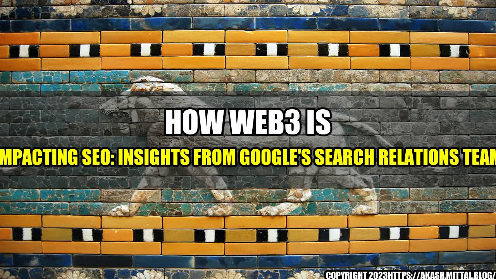

How Web3 is Impacting SEO: Insights from Google's Search Relations Team

When I first heard about Web3, I thought it was just another trendy buzzword in the cryptocurrency and blockchain world. But as I dug deeper, I realized that Web3 is much more than that. It's a paradigm shift that is transforming the way we interact with the internet, and it has significant implications for the future of SEO.
What is Web3?
Web3, also known as the decentralized web, is the next evolution of the internet. It's a new model that aims to create a more open, transparent, and decentralized web. Instead of relying on centralized servers and intermediaries, Web3 uses blockchain technology to allow for direct, peer-to-peer interactions between users.
This new model has many benefits. For one, it provides greater security and privacy for users. It also enables new types of applications and services that were not possible before. And perhaps most importantly, it puts control back in the hands of users, rather than large corporations.
How is Web3 Impacting SEO?
As Web3 becomes more mainstream, it will have a significant impact on SEO. Here are just a few of the ways it will change the game:
- Decentralization of information: Web3's decentralized nature means that there will be no central source of information. Instead, information will be spread out across multiple nodes in the network. This means that traditional search engine optimization techniques, such as keyword optimization and link building, may become less effective.
- Emergence of new types of search engines: With Web3, new types of search engines may emerge that are designed to work with decentralized data. These search engines will need to be able to crawl and index data on the blockchain, which requires a different set of skills than traditional search engines.
- New types of content: Web3 will enable new types of content that were not possible before, such as decentralized apps and services. This means that SEO practitioners will need to be able to optimize these new types of content for search engines.
So what can you do to stay ahead of the curve?
Practical Tips for SEO in the Web3 Era
Here are a few tips to help you adapt to the changing SEO landscape:
- Focus on quality content: With decentralization, it's likely that quality content will become even more important than ever. Instead of relying on traditional SEO techniques, focus on creating high-quality content that provides real value to users.
- Learn about blockchain technology: To succeed in the Web3 era, it's important to understand blockchain technology and how it works. This will help you optimize content for decentralized platforms and understand how to work with new types of search engines that may emerge.
- Experiment with new types of content: Web3 will enable new types of content that were not possible before. Experiment with creating decentralized apps and services, and see how they can be optimized for search engines.
"The Web3 era presents a unique opportunity for SEO practitioners to rethink their strategies and adapt to the changing SEO landscape."
Conclusion
The emergence of Web3 is an exciting development that will have significant implications for the future of SEO. While it's still early days, it's clear that traditional SEO techniques may need to be revised to account for the decentralization of information and the emergence of new types of search engines.
- The Web3 era presents a unique opportunity for SEO practitioners to rethink their strategies and adapt to the changing SEO landscape.
- Focus on creating high-quality content that provides real value to users.
- Learn about blockchain technology, experiment with new types of content, and be open to new possibilities.
Curated by Team Akash.Mittal.Blog
Share on Twitter Share on LinkedIn